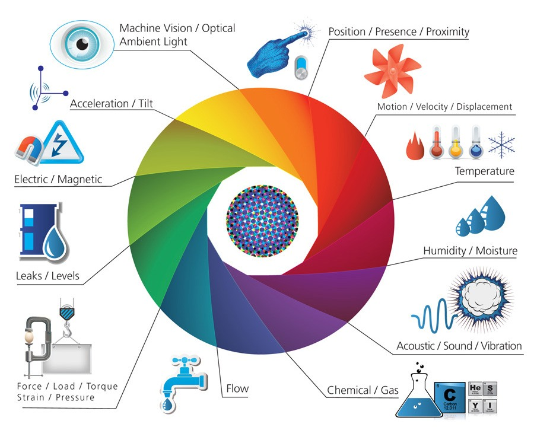
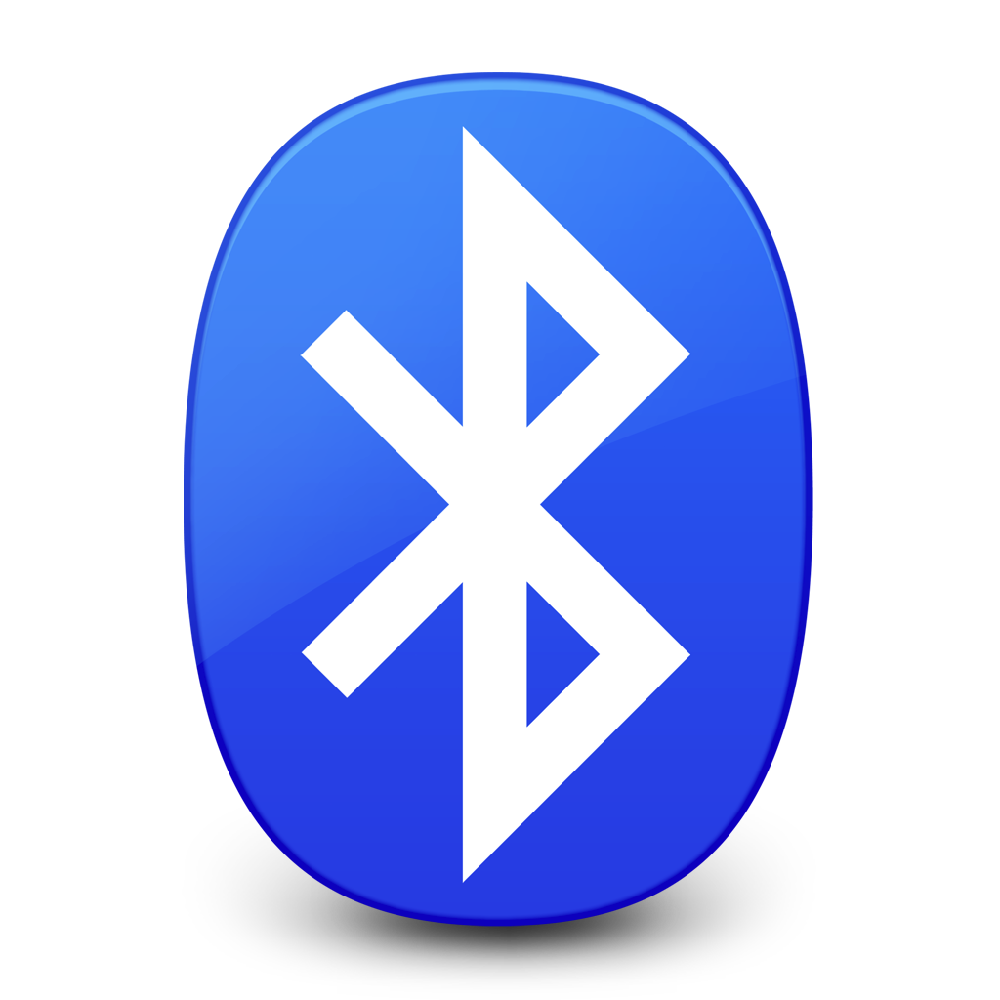

IoT
Internet Of ThingsSummary
What is IoT ?
Architecture study
Methodologies study
Conclusion
What is IoT ?
Definition
"A network of physical objects that contain embedded technology to communicate and sense or interact with their internal states or the external environment"
Gartner
Definition
"It’s about connecting devices over the internet, letting them talk to us, applications, and each other"
The guardian
Definition
"The IoT is connecting many devices over the Internet in order to gather , process and make decisions using its data"
Our definition
Architecture
Applications
Management system
Gateway + Network
Sensors
Applications
Health care
Transportation
Road traffic management
Architecture study
Sensors

Boards

Arduino
Boards
Raspberry Pi
Boards

Intel Edison
Communication protocols

Bluetooth
Communication protocols
WiFi
Communication protocols
ZigBee
Methodologies study
Software development methodology is splitting of software development work into different phases which include several actions intending for better management
Methodologies study
Waterfall Model
Methodologies study
Prototyping Model
Methodologies study
Iterative Model
Methodologies study
Spiral Model
Methodologies study
RAD Model
Methodologies study
RUP Model
Methodologies study
SCRUM Model
Methodologies study
IoT Model